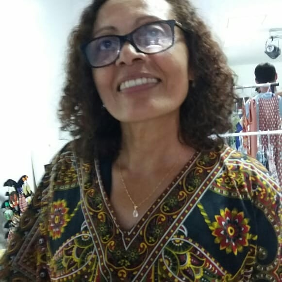
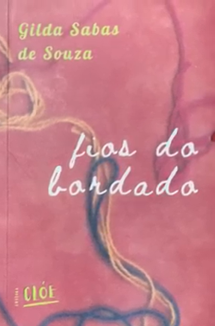
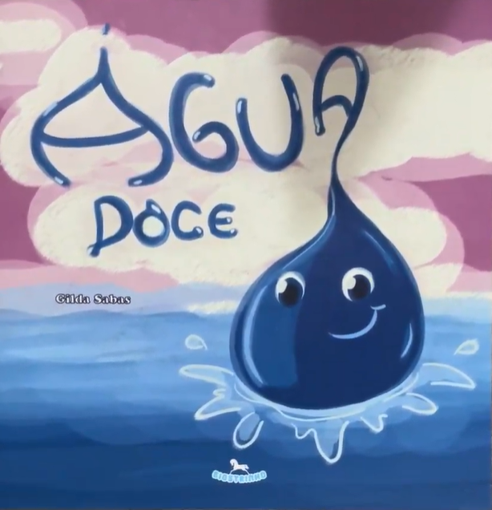
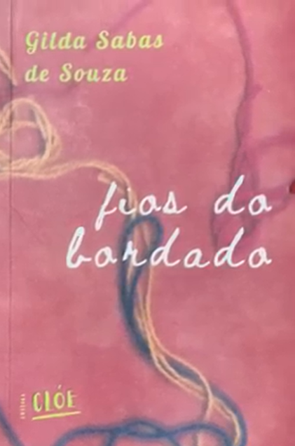
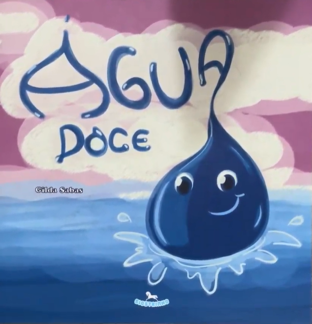

Gilda Sabas
Gilda Sabas, nascida em 16 de setembro de 1974 no sertão brasileiro, é uma escritora, poeta, artista visual e professora que transcendeu as fronteiras de sua terra natal ao se estabelecer em São Paulo na juventude. Seu trabalho é profundamente imbuído da rica herança cultural dos índios Pankará, povo ao qual pertence, o que confere às suas obras uma ressonância única de tradições ancestrais e visões contemporâneas. A fusão de sua formação acadêmica com as influências de seu passado indígena resulta em uma produção artística e literária que desafia e enriquece o panorama cultural brasileiro.
Suas Obras
Como já citado, suas obras carregam grandes influências de onde Gilda Sabas nasceu. Sendo assim, em suas obras contemporâneas existem tons de cores vibrantes e o desejo de um pais melhor. Veja algumas de suas obras mais famosas indo para seu facebook e abaixo você pode ver seus livros de maiores sucessos
 



Sua Origem
Para saber mais da origem de Gilda Sabas, assista a sua entrevista para o Canal Coé, onde ela comentou sobre suas inspirações e também sobre sua vida em geral